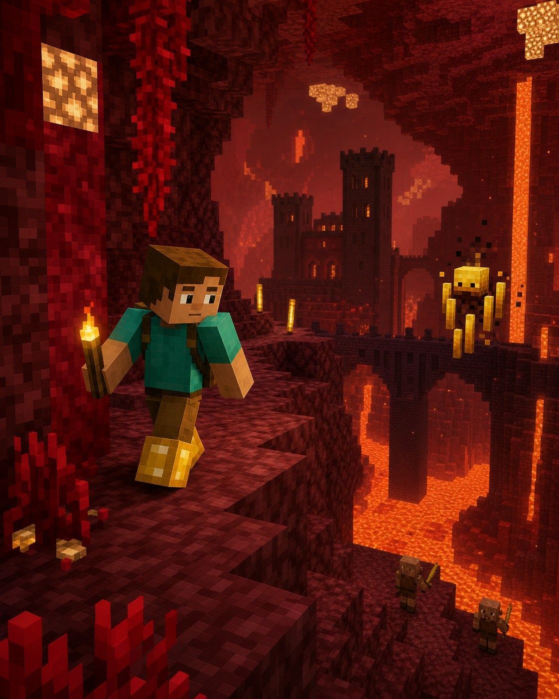

Велика пригода
Світ не закінчується вдома
У Незері
все інакше.
Тут небезпечніше, зате саме тут починається шлях до зіль, ока Енду та фортеці.

Навіщо це потрібно?
У Незері шукають фортецю, де живуть іфрити. Їхні стрижні потрібні для зіль і для створення ока Енду.
◆ дає іфритів✦ відкриває зілля↑ веде до фортеці
Три прості дії
Як не загубитися
1Захисти порталПобудуй навколо нього маленьку кімнату+
Так гасти або інші монстри не зіпсують повернення додому.
2Одягни щось золотеПігліни не нападатимуть одразу+
Достатньо одного золотого елемента броні, наприклад чобіт.
3Шукай фортецюТемні мости й коридори+
Саме там є іфрити та незерський наріст для зіль.
Незер: головна знахідка
Фортеця
→Стрижень
іфрита
іфрита
● Стрижень іфрита можна перетворити на порошок для ока Енду.
!
Підказка мандрівникові
Важливо знати
Не копай навмання
За стіною може бути лава.
Бери блоки
Вони потрібні для мостів і захисту.
Слідкуй за їжею
Повернення може зайняти довше, ніж здається.
5
Маленьке завдання
Спробуй за 5 хвилин
- Зроби захист навколо порталу.
- Одягни золоті чоботи.
- Постав перші блоки-маркери на дорозі.